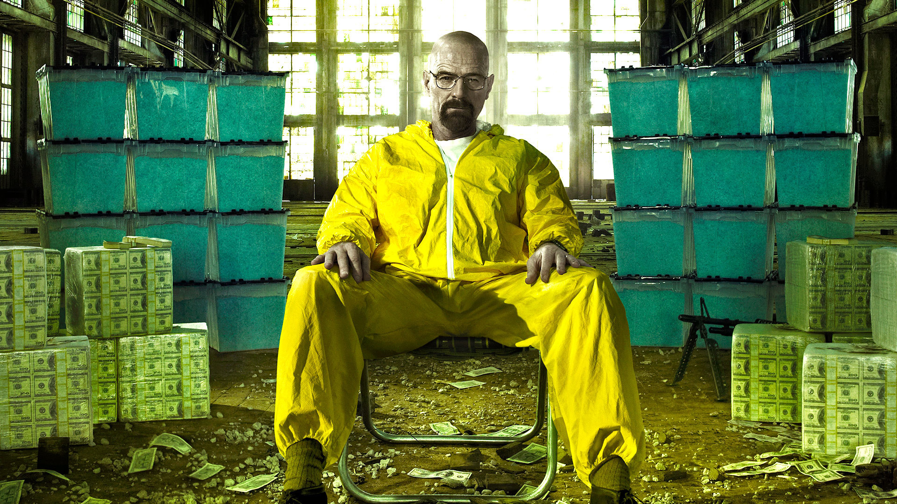
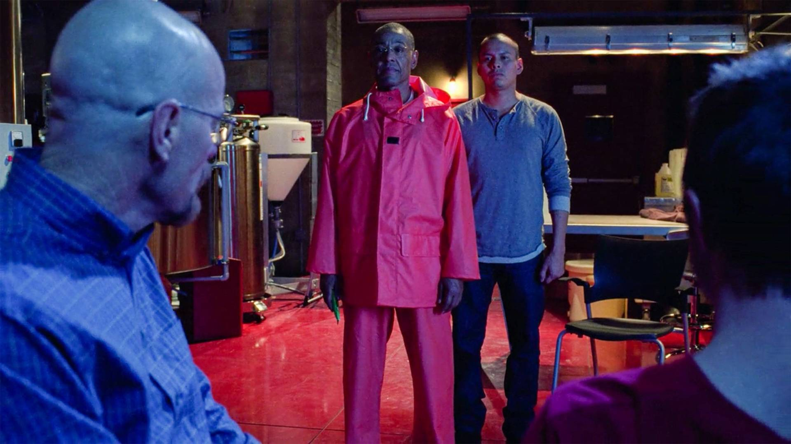
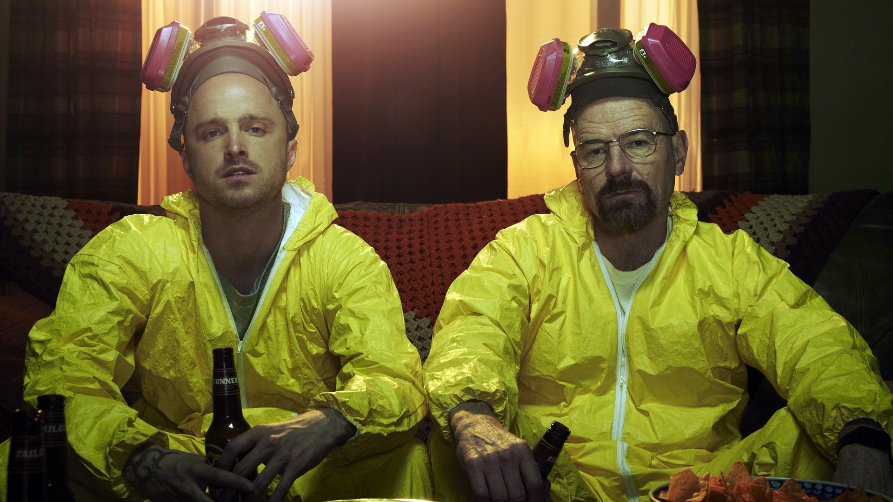
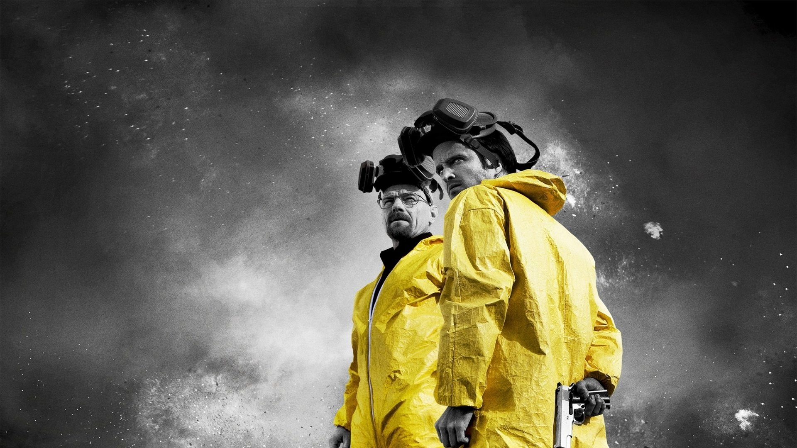
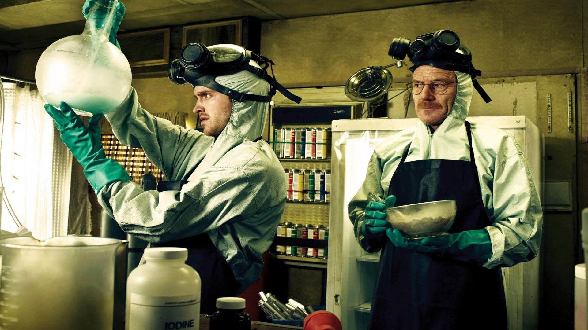

Breaking Bad nos muestra la vida de Walter White (Bryan Cranston), un genio en el campo de la Química cuya existencia está marcada por una enorme frustración tanto a nivel personal como laboral.
Hundido por una monótona e insulsa relación con su mujer e incapaz de poner a prueba su brillantez trabajando como profesor de instituto, Walter da un giro radical a su forma de vida cuando descubre que tiene un cáncer terminal. Desde entonces, a su manera, decide reafirmar el amor por su familia y por la química montando un laboratorio de metanfetaminas junto a Jesse Pinkman (Aaron Paul), un antiguo y problemático alumno, para dejar a su esposa y a su hijo en buen lugar cuando él falte.
La serie explora los límites del ser humano y expone a Walter a situaciones en las que nunca antes podría haberse imaginado estar. Desde muy pronto, la serie muestra a este profesor de química disfrutando este tipo de situaciones, lo que choca directamente con su anterior estilo de vida. No en vano, la traducción más acertada del título original de la serie es: "Portándose mal".